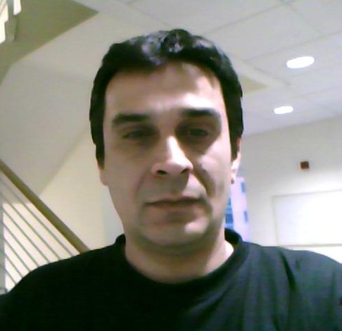

Dragan Stošić
|  |
Dragan Stošić graduated in 1992 in electrical Engineering from ETФ University of Belgrade. He also received a M.Sc. in Engineering from University of Belgrade. His research focuses on the practice and formalisation of various programming techniques. Dragan's interests are programming from specification, refinement calculus, interactive theorem proving in context of formal methods and type theory. Dragan started to work as senior developer on SenseTile project. This project represents supporting system for large-scale experiments with complex multimedia sensing and processing at terabyte scales. In 2009 he joined KindSoft group. |